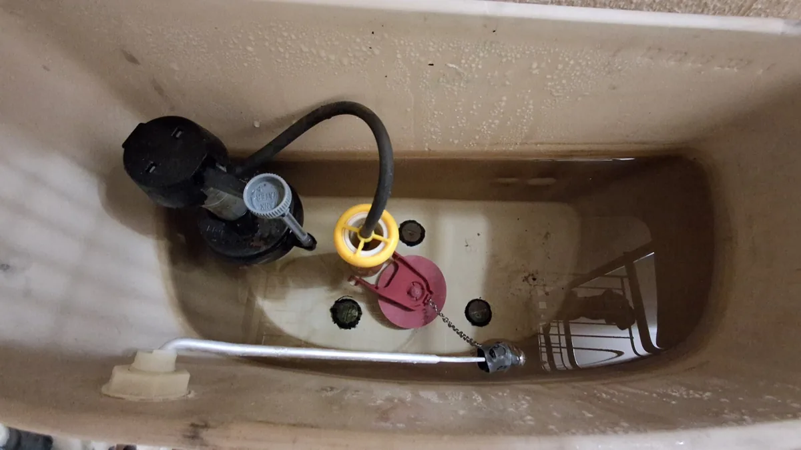

Runs after flushing
The tank does not become quiet because water continues moving through the valve or past the flapper.
Replace the fill valve, flapper and supply line, then adjust the water level and check for leaks. A focused repair for common toilet-tank problems.
For accessible tank components—not clogged drains, concealed leaks or complete toilet replacement. Prefer to call? (949) 371-6423

The toilet may still flush, but a worn or misadjusted part can keep water moving long after the tank should be quiet.
The tank does not become quiet because water continues moving through the valve or past the flapper.
The toilet briefly turns on even when nobody has used it, often because tank water is slowly escaping into the bowl.
A worn or restricted fill valve can hiss, fill slowly or fail to shut off cleanly at the correct water level.
Replacing the common wear items together helps avoid fixing one aged component while leaving another close to failure.
Related work depends on compatibility, access and the condition of the visible connections.
Show what the toilet does after flushing and include a photo inside the tank.
Dustin checks whether it appears to fit this standard tank repair.
You know the expected repair and price before the appointment.
The components are replaced, adjusted and tested through multiple flushes.
This service addresses accessible components inside the tank and the toilet supply line. It does not turn every plumbing symptom into a larger project.
These are verified client reviews about Dustin’s workmanship, communication and pricing. They are not presented as toilet-repair-specific reviews.
“Highly recommended as a the ‘one stop’ fix everything, and anything, perfect the first time. Dustin is a Pro, on time, efficient, and fair in his pricing for all trades.”
“As a realtor I know how important (and how difficult) it is to find an outstanding handyman, and Dustin is among the best I’ve worked with. He’s great at what he does: Knowledgeable, proactive, punctual, trustworthy... His workmanship, work ethic, and professionalism are excellent.”
“Dustin was knowledgeable, professional and friendly. He worked with my schedule and kept me informed via texts of when he would arrive and his progress on the work being done. Reasonable rates and great work!”
The standard repair includes replacing the fill valve, flapper and supply line, adjusting the tank water level and testing for visible leaks.
A worn flapper can let water leak from the tank into the bowl, while a failing or poorly adjusted fill valve can keep the tank from shutting off correctly. The standard repair addresses both components and the supply line.
No. This service is for accessible toilet tank components. Toilet and drain clogs require a drain-clearing or plumbing specialist.
This page covers toilet tank component repairs only. Full toilet replacement is not advertised as part of this service.
An accessible shutoff valve can sometimes be replaced for $115 when the work does not require opening walls or modifying concealed plumbing. Send a clear photo for review.
Primary areas are Irvine, Newport Beach, Newport Coast, Corona del Mar and Laguna Beach. Also serving Lake Forest, Mission Viejo, Aliso Viejo, Laguna Niguel, Dana Point and surrounding areas.
Text a short video after flushing and a clear photo inside the tank.